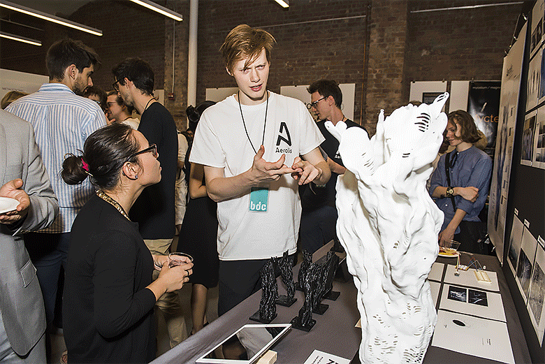

Aerolis (∀)
A data driven air filtration system.
Air pollution is one of the biggest global environmental and health challenges and a global action plan is needed. In response, the Aerolis project is an air purifying biological artwork for urban and industrial environments that mimics the natural air purifying functionality of tree bark. The 3D structure is based on algorithmic design, incorporating data on wind velocities and directions and grows in harmony with its surroundings. Its surface is biofunctionalized with tailor-made microorganisms that break down air pollutants in urban and industrial environments.
The Aerolis Project will take part in the 2018 Biodesign Challenge, held on the 21st and 22nd of June at the Museum of Modern Art in New York City.
Made in collaboration with:
Prof. Marjan De Mey,
Prof. Wim Van Criekinge
Ir. Bram Ulrichts,
Ir. Arne Saldí,
Ir. Kylian Van Damme,
Ir. David Ysebaert
Dr. D. Bauwens,
Dr. L. Coussement,
Dr. B. De Paepe,
Dr. M. van Brempt
The two shortfilms can be found here and here
Additional information can be found on the official website.


|
Context Aerolis started out as a concept to play a role in air purification. While thinking of ideas to implement an air filtration unit that could create a local bubble of clean air, the project ended up as a biofunctionalized organic design that is based on wind data and exhibits a scalable character. Instead of being installed in a private context and functioning very locally, Aerolis could also be envisioned as an organic form surrounding cities or parks, uniquely designed in accordance with the local climate and harboring biological air filtration technologies to act upon air pollution. Technology
In order to transform the 3D shape to a real air purifying device we used biotechnology and synthetic biology techniques. Our shape will be 3D printed in an innovative filament that allows us to bind specialized microorganisms which can purify air. The project's primary focus is to enable air purification by degradation of volatile organic compounds (VOCs), a common component of exhaust gases harmful for human health. Being able to functionalize 3D printed shapes with biologicals has an abundance of potential applications.
|
Design
Aerolis is a design which on one hand hosts a biofilter and on the other hand allows it to integrate in an urban context. The effectiveness of a biofilter depends on the air flow and its surface area. These parameters formed a basis for the shape design: Aerolis is a structure that grows towards the dominant wind profile in a certain point in space. The shape originates from a simulation that aggregates three-dimensional wind data as vectors in a Cartesian coordinate system and the model grows in discrete steps along the vertical z-axis.
|

Sensor
Finally, we also conducted research on the possible use of sensors as a part of the Aerolis structure. These can be installed to provide information on certain parameters that are important for the maintenance and well-functioning of the biofilter or they can be used to report the status of the air surrounding Aerolis. This last type of sensor was programmed by our team by using Arduino. The sensor was calibrated by sampling a number of locations. These locations were quantitively classified for air quality to construct a linear regression model, based on which a certain measured input is quantitatively translated to an air quality. This output is fed to e.g. an LED light which can show a green colour in case of a relatively good air quality and a red colour for a worse air quality.

|
Filament
In the filament work package, we tried to produce a plastic filament that’s activated and susceptible to biological appendages. The filament can subsequently be used for printing the desired 3D structure. PLA (polylactic acid) was chosen as basic plastic carrier because of its biodegradability, optimal melting temperature, and general easy-to-print characteristics. In order to enhance the function of the PLA, we needed to attach microorganisms to the filament. In order to get the microorganisms attached to the final structure, a moiety needs to be present in order for the filament to capture them, bind them and keep them there.
|
Biofunction
Air pollution can be captured and degraded by microorganisms who use the polluting components as an energy source on which they grow. Various microorganisms that degrade individual VOCs have been reported, and genomic information related to their phylogenetic classification and VOC-degrading enzymes is available.

|


|
Implementation
It is necessary that the technology present in the Aerolis structure functions well to get a desired result in terms of air purification. Important parameters for this are air flow and a decent surface contact time. After collecting and consulting information on the functioning of biofilter and other technologies, we found that an unforced air stream would not pass through the structure efficiently enough for VOC removal. The team had an interesting talk with a professional bio-engineer working in the sector of air and odour pollution. He taught us about vertical biofilter installations and the need for additional pressure for the air to sufficiently pass through the structure so it does not just glance off the walls.
Sustainability
The larger part of today’s methods for air purification makes use of non-sustainable products like chemicals or needs a great amount of energy to function like a thermal oxidizer or the activation and regeneration of active carbon. Aerolis however, makes use of a biofilter to purify the surrounding air. Only maintenance concerning the humidity and the nutrients available in the biofilter will be needed to ensure a steady purification, which is much less energy intensive as compared to the other air purification methods.
Feasibility
Transitioning from a conceptual prototype to the real-world, full-size model still poses a few challenges.
|
Human Impact
Aerolis will act as a biofilter and purify the surrounding air, so it will create a local oasis of pure air. The “Proceedings of the National Academy of Sciences” reports that for every 10 micrograms per cubic meter increase of PM10 in the air a person will lose seven months of their life expectancy. For the even smaller PM2.5, an identical increase steals an entire year off your life (read more about air pollution here). This reduced life expectancy was mapped for Europe, where for densely populated areas such as Flanders and The Netherlands, a reduction of about 3 years is predicted. Aerolis will try to give these currently lost years back to the people in these busy and polluted parts of the world. Also, it cannot be ignored that air pollution affects the flora and fauna of our world. Aerolis could help alleviate this stress.

|

|
Risk
As Aerolis is designed to perform as a biofilter, the microorganisms that would be active in the structure are a crucial element for the functionality of the design. Of course, when working with living organisms, considerations about safety and comfort have to been taken into account. Above all, the community present in the biofilter should be capable of degrading the polluting components present in city air. There are various options to create such a community: the natural community, present in an organic carrier material such as compost, a community inoculated with specialized organisms; on the other hand there is the choice between a microbial community, a fungal community or a mixed community.
|